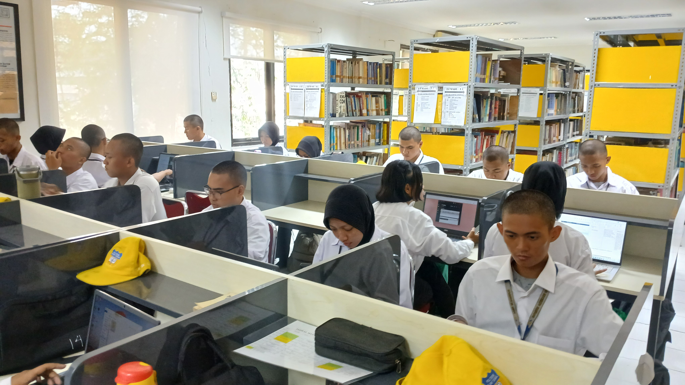

Tujuan Kegiatan
Peserta mengenal cara developer menyusun informasi, menggunakan tools, membaca error, dan membangun sesuatu secara bertahap.
PROJECT APLIKASI WEB
Dari pengguna teknologi menjadi pembuat teknologi.
Peserta mengenal cara developer menyusun informasi, menggunakan tools, membaca error, dan membangun sesuatu secara bertahap.
